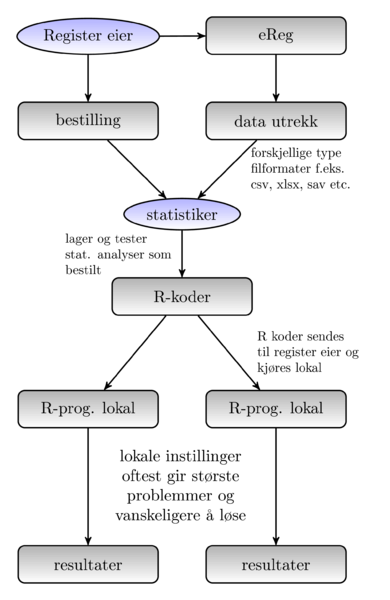
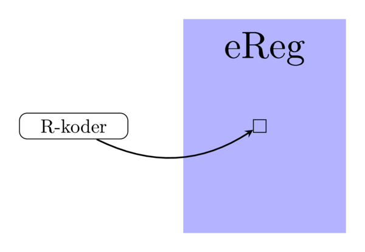
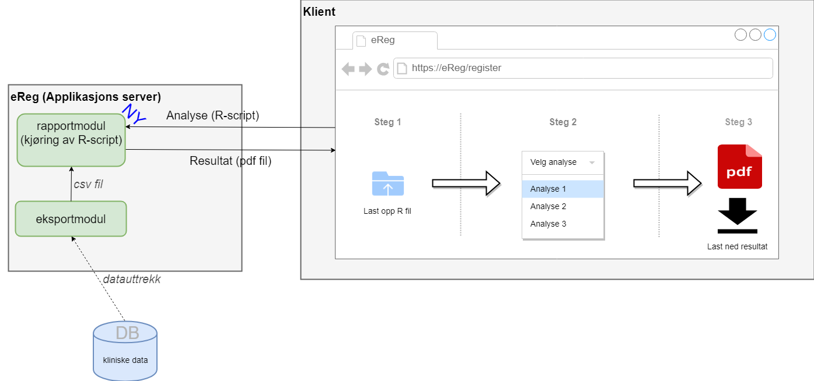

eReg rapport
10 apr 2018
Analyser og rapport
Data uttrekk
Analyse program f.eks Excel, SPSS eller R
Tilpasset analyse ved å lage R pakke “
rreg
”
Rapport per sykehus
Rapport for alle sykehus
Interaktiv resultat
Dagens analyse prosess

Utfordringer
Lokal tilpasning
Lokal installasjon
Krever grunnlegende kunnskap om analyseverktøy
Løsningen
Kjør R-kode i
eReg

eReg rapport
